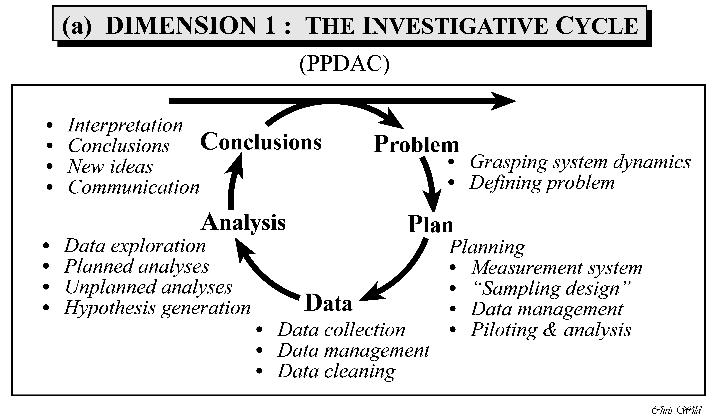
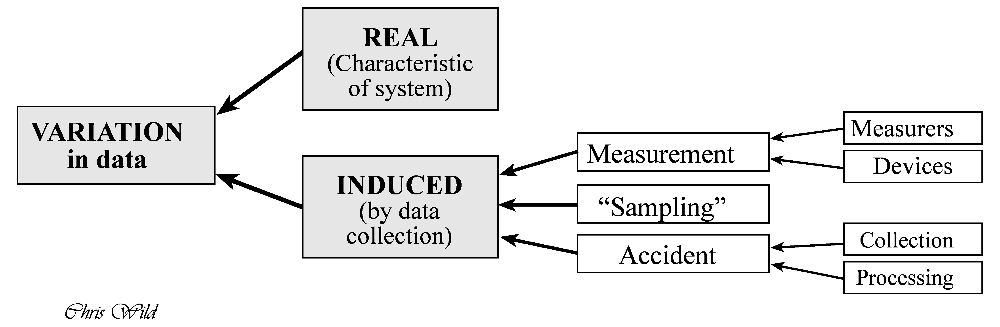
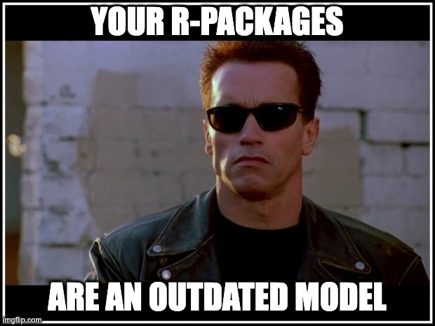

flowchart LR
A{Goals} --> B(describe)
A --> C(predict)
A --> D(explain)
B --> E(distribution)
B --> F(assocation)
B --> G(extrapolation)
C --> H(point estimate)
C --> I(interval)
D --> J(causal inference)
D --> K(population)
D --> L(latent construct)
1 Basics

1.1 Embarking
Exercise 1.1 (Hello stats) Present yourself to the group along the lines of the following three tags:
- Your primary scientific interest
- Your expectations to this course
- Your background in statistics and R
If you want, feel free to add a fun fact. \(\square\)
1.2 Goals in statistics
1.2.1 Taxonmy of goals
Many stories to be told. Here’s one, on the goals pursued in statistics (and related fields), see Figure Figure 1.1.
Note
Note that “goals” do not exist in the world. We make them up in our heads. Hence, they have no ontological existence, they are epistemological beasts. This entails that we are free to devise goals as we wish, provided we can convince ourselves and other souls of the utility of our creativity.
Hernán et al. (2019) distinguish:
Description: “How can women aged 60–80 years with stroke history be partitioned in classes defined by their characteristics?”
Prediction: “What is the probability of having a stroke next year for women with certain characteristics?”
Causal inference: “Will starting a statin reduce, on average, the risk of stroke in women with certain characteristics?”
1.2.2 Lab: Your goals
Match your (most pressing) research goal to the nomenclature for scientific goals as shown in Figure 1.1. Explain your reasoning.
Next, put three research themes or studies you particularly like to this nomenclature and explain your reasoning.
1.3 A framework for problem solving
1.3.1 PPDAC
The PPDAC Model is a methodological framework (aka a model) for applying the scientific method to any analytical or research question, or at least it is applicable to quite a few (mackay_scientific_2000?). It is not meant to be a rigid sequence, but rather a cycle that may turn a number of rounds like a spiral. Statistician Chris Wild puts the PPDAC cycle in the following figure, see Figure Figure 1.2. In this short essay, he summaries his ideas on how to use the PPDAC as a tool for data analysis in problem solving.

Wickham and Grolemund (see Figure Figure 2.1 in Section 2.3) provide a suggestion of the parts of the statistical analyses, that is the “Analysis” step in the PPDAC.
1.3.2 Fundamental issues in data analysis
Wild & Pfannkuch (1999) further note that variation is one of the essential characteristics of data. They discern to types of variation however, see Figure Figure 1.3.

Wild & Pfannkuch (1999) give a more systematic overview on how a quantitative research question - applied or basic - can be tackled and conceived. For example, in their paper the authors enumarate some dispositions that researcher should embrace in order to fruitfully engage in empirical research:
- Scepticism
- Imagination
- Curiosity
- Opennness
- A propensity to seek deeper menaing
- Being logical
- Engagement
- Perseverance
1.4 Getting started
1.4.1 R Basics
Check out the course Statistics1, chapter on importing data for an accessible introduction to getting started with R and RStudio.
Please also note that R and RStudio should be installed before starting (this course).
In addition, your R packages should be updtodate, according to Arnold Schwarzenegger (s. Figure 1.4).

1.4.2 Help me, I’m lost
Check-out this introductory statistics course.
Pro-Tipp: Use the translation tool of your browswer to translate into your favorite language.
1.4.3 Initial quiz
To get an idea whether you have digested some R basics, consider this quiz.
1.5 Data import
Check out chapter 3 in Statistics1 on how to import data into RStudio and for some basic concepts about “tidy data”.
Spoiler: There’s a button in RStudio in the “Environment” Pane saying “Import Dataset”. Just click it, and things should work out.
Note
I strongly advice working with Projects in RStudio, as it makes working with file paths a lot easier.
1.6 Blitz start with data
We’ll work predominantly with the following data sets.
1.6.1 Motor Trends Cars
To blitz start with data, type the following in R:
data(mtcars)And the data set mtcars will be available.
To get help for the data set, type help(mtcars)
1.6.2 Penguins

A bit more advanced, but it’s a nice data set, try the Palmer Penguins data set:
d <- read.csv("https://vincentarelbundock.github.io/Rdatasets/csv/palmerpenguins/penguins.csv")
head(d) # see the first few rows, the "head" of the table| rownames | species | island | bill_length_mm | bill_depth_mm | flipper_length_mm | body_mass_g | sex | year |
|---|---|---|---|---|---|---|---|---|
| 1 | Adelie | Torgersen | 39.1 | 18.7 | 181 | 3750 | male | 2007 |
| 2 | Adelie | Torgersen | 39.5 | 17.4 | 186 | 3800 | female | 2007 |
| 3 | Adelie | Torgersen | 40.3 | 18.0 | 195 | 3250 | female | 2007 |
| 4 | Adelie | Torgersen | NA | NA | NA | NA | 2007 | |
| 5 | Adelie | Torgersen | 36.7 | 19.3 | 193 | 3450 | female | 2007 |
| 6 | Adelie | Torgersen | 39.3 | 20.6 | 190 | 3650 | male | 2007 |
Here’s some documentation (code book) for this data set.
1.7 Lab
Import your research data into R.
1.8 Exercises
🧑🎓 I need exercises on R!
👨🏫 Checkout all exercises tagged with “R” on datenwerk. Pro-Tipp: Use the translation function of your browers to translate the webpage into your favorite language.
1.9 More data sets
Check out this curated list of data sets useful for learning and practicing your data skills.
1.10 If nothing else helps
Stay calm and behold the infinity.
{kind=link}
1.11 Going further
Similar to the “goals” of statistics as presented here, Gelman et al. (2021), chap. 1.1 proposes three “challenges” of statistical inference.
Wild & Pfannkuch (1999) discuss the thought processes involved in statistical problem solving seen from a broad perspective. Ismay & Kim (2020) is a helpful start into the first steps in R.
If you want to dig deeper, check-out this course on statistical inference using Bayes statistics. If you are interested in predictive modeling, check-out this couse.